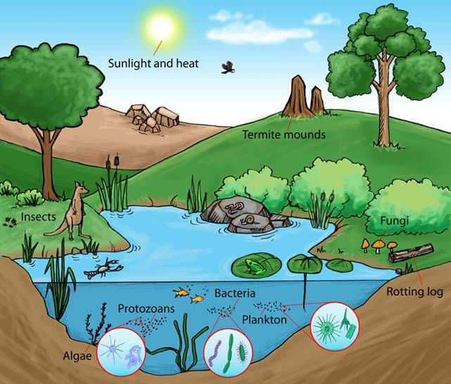
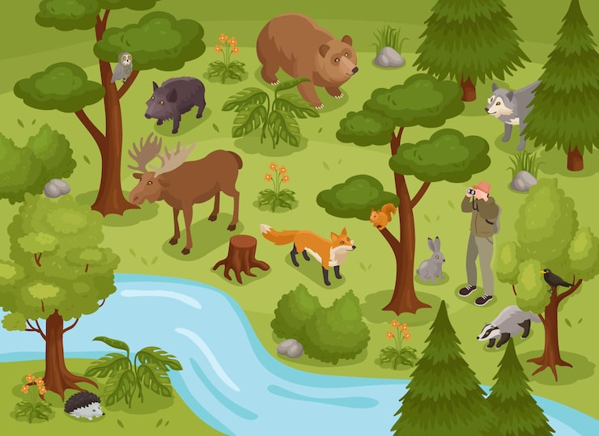

Carrying capacity is the maximum number of organisms that an environment can support for a long period of time without damaging its available recources.


Carrying capacity refers to the number of organisms that an ecosystem can support based on the available food, water, place, shelter, and other resources. When a population reaches its carrying capacity, its growth usually slowdown because resources become limited.
several factors can affect the carrying capacity of an ecosystem. These factors may be biotic or abiotic.
for example,if forest has enough food and water for only 500 deer, the forest may not be able to support a much larger deer population. If the number of deer is too high, food and water may become scarce.
| Ecosystem | Organism | Limiting Resource |
|---|---|---|
| Pond | Deer | Food and water |
| Pond | Fish | Food and oxygen |
| Grassland | Cattle | Grass and water |
| Ocean | Fish | Food and space |
Understanding carrying capacity helps us understand how populations interact with their environment. It also teaches us why protecting natural resources is important. When resources are used responsibly, ecosystems can remain healthy and balanced.
In conclusion, carrying capacity is the maximum population that an ecosystem can support with its available resources. Food, water, space, shelter, and competition can affect it. Maintaining balance in ecosystems is important for the survival of organisms.
For more information about carrying capacity and population growth, visit: Encyclopaedia Britannica – Carrying Capacity